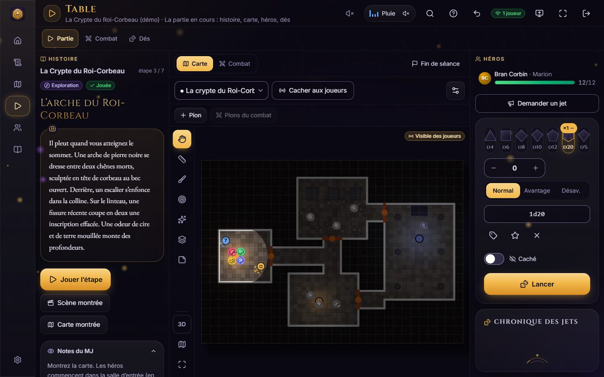
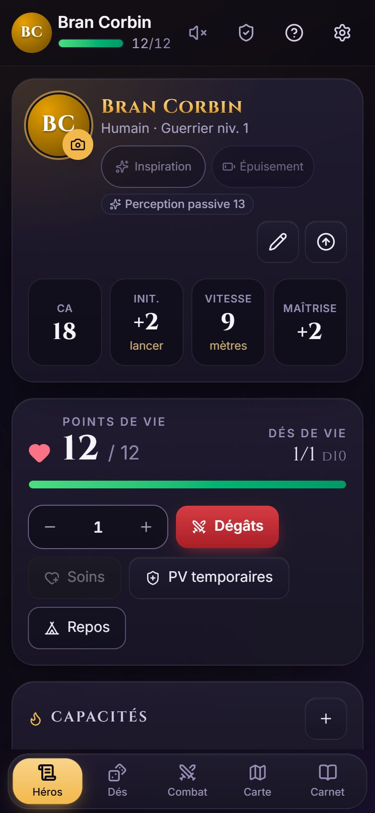
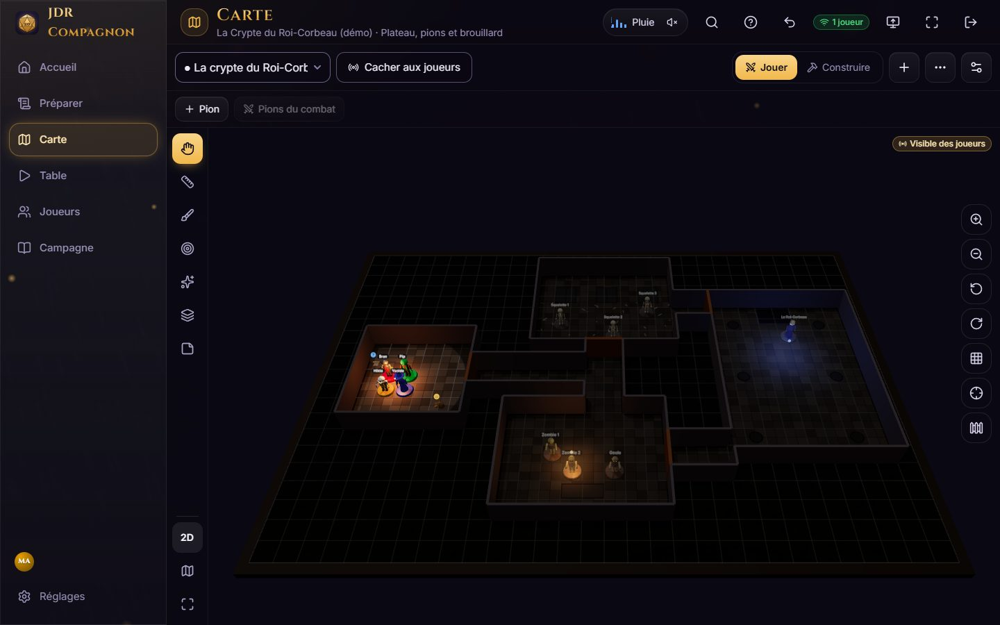
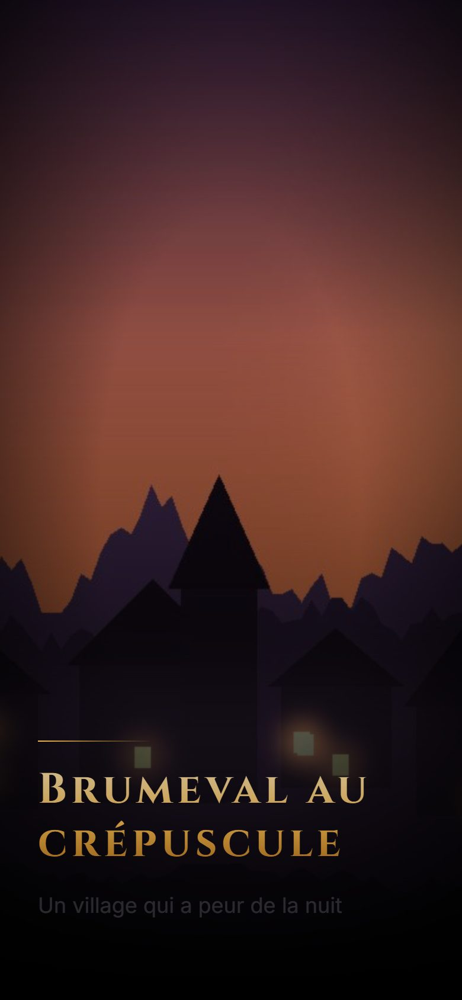
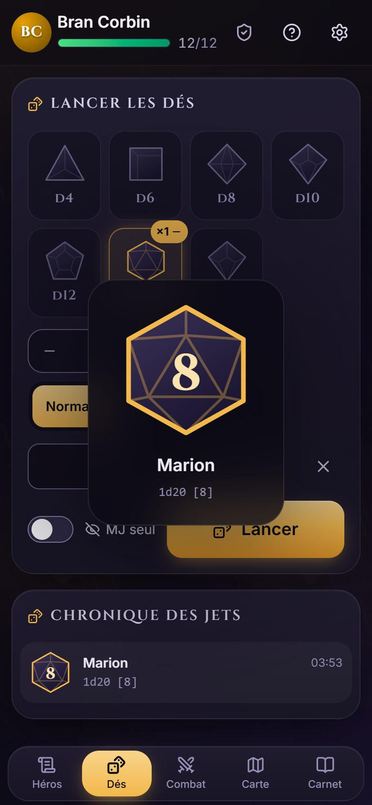
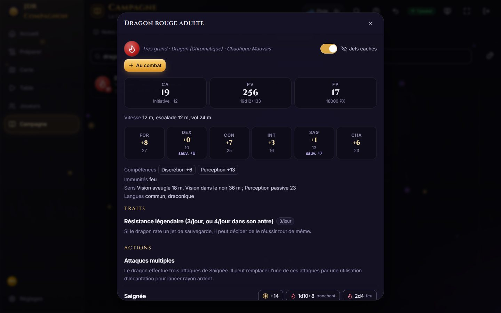

Photo → carte
Photographiez un plan dessiné ou un plateau quadrillé : la feuille est redressée, les cases comptées, les murs proposés.
Jeu de rôle autour de la table
JDR Compagnon rassemble la table : le maître du jeu prépare et mène la partie, chaque joueur retrouve sa fiche, ses dés et la carte sur son téléphone. Tout se met à jour en direct, sans compte et sans internet.


Une soirée de jeu
Sur son PC ou sa Surface : l’accueil liste ce qu’il reste à préparer, puis « Ouvrir la table » lance la soirée.
Sur le même wifi, leur téléphone devient leur fiche, leurs dés et leur carte. Rien à installer de leur côté.
Le MJ révèle une scène, montre la carte, lance le combat : chaque téléphone suit. Les jets arrivent à la table en direct.
Cartes
Importez une image, une carte Universal VTT (Dungeondraft, Dungeon Alchemist) ou construisez-la : sols, murs, portes, lumières, 80 décors, effets animés. La vision et le brouillard se calculent tout seuls : chaque joueur ne voit que ce que voit son héros.

Scénario
Chapitres, étapes, embranchements. « Jouer l’étape » montre la scène illustrée aux joueurs, affiche la carte, lance l’ambiance et prépare la rencontre. Le texte à lire et les secrets du MJ restent sous ses yeux.
Il pleut quand vous atteignez le sommet. Une arche de pierre noire se dresse entre deux chênes morts…
Trois aventures complètes sont fournies, avec livret, cartes, PNJ et héros prétirés.


Règles
Le texte du SRD 5.2.1 publié en français par l’éditeur du jeu : 330 monstres avec boutons de jet, 339 sorts avec leurs dés selon le niveau, 258 objets magiques, l’équipement et le glossaire des règles. Création de personnage 2014 ou 2024, montée de niveau, repos, jets contre la mort, états.

Et aussi
Photographiez un plan dessiné ou un plateau quadrillé : la feuille est redressée, les cases comptées, les murs proposés.
Initiative, points de vie, états, tour des monstres, attaques depuis la carte validées par le MJ.
Le MJ demande un jet de sauvegarde à trois joueurs : les dégâts s’appliquent selon chaque résultat.
Les joueurs qui préfèrent leurs dés saisissent le résultat ; il compte comme les autres.
Taverne, forêt, orage, combat : sons de table synthétisés, plus vos propres musiques.
Une télé ou un projecteur montre la carte à l’échelle des figurines, pendant que le MJ garde la main.
Une aventure et tout ce qu’elle utilise dans un seul fichier, à envoyer à un autre MJ ou au catalogue de la communauté.
Carte X anonyme, lignes et voiles proposés en secret au MJ.
PNJ, lieux, quêtes, chronique écrite toute seule, calendrier du monde, documents remis aux joueurs.
Résumé « Précédemment… », PNJ, descriptions, questions de règles, avec votre propre clé ou un modèle sur votre PC.
Un joueur en déplacement rejoint la table par internet, protégé par un code.
Tout reste sur le PC du MJ. Sauvegarde en un fichier, copie quotidienne dans votre OneDrive si vous voulez.
Carnet du MJ
Dans le train, au café, sans réseau : aventures, cartes, scènes, PNJ et rencontres se préparent sur le téléphone, avec les mêmes écrans que sur la tablette. Le soir venu, « Envoyer au PC » : la table reçoit tout, sans doublon et sans effacer ce qui a déjà été joué.
Gratuit. Vos données restent dans le téléphone : rien n’est envoyé ailleurs.


Vos données
Ni pour le MJ, ni pour les joueurs. Pas de publicité, pas de statistiques d’utilisation.
Campagnes, fiches et cartes ne quittent pas votre ordinateur. Les téléphones lui parlent sur le wifi de la maison.
Une copie de sécurité chaque jour et avant chaque mise à jour, retour en un geste. Toute la table s’exporte dans un seul fichier, pour la garder ou changer de PC.
Ce qui passe par internet, et quand : la politique de confidentialité en entier.
Gratuit ou Pro
L’édition Pro ajoute quatre fonctions. Pour l’instant, elle est offerte sur invitation.
| Gratuite0 € | Prosur invitation | |
|---|---|---|
| Téléphones des joueurs : fiche, dés, carte | ✓ | ✓ |
| Cartes 2D, murs, vision, brouillard, constructeur | ✓ | ✓ |
| Scénario, scènes, ambiances, combat | ✓ | ✓ |
| Règles 2024 en français, création de personnage | ✓ | ✓ |
| Écran de table (télé, projecteur) | ✓ | ✓ |
| Carnet du MJ sur téléphone, hors connexion | ✓ | ✓ |
| Sauvegardes, copies automatiques, partage | ✓ | ✓ |
| Vue 3D : figurines, relief, vue à la première personne | non– | ★ |
| Bibliothèque d’aventures prêtes à jouer | non– | ★ |
| Assistant IA (avec votre propre clé) | non– | ★ |
| Jouer à distance par internet | non– | ★ |
Pendant la bêta, l’édition Pro est offerte sur invitation. Rien de ce qui sert à jouer n’y est réservé : la table entière reste gratuite. Demander une invitation
Télécharger
Sur le PC ou la tablette Windows du MJ. Les joueurs n’installent rien : ils scannent le QR code affiché par l’application.
Version 3.13.0 du 20 octobre 2026 · 105 Mo · Windows 10 et 11, 64 bits. Les mises à jour arrivent ensuite toutes seules.
Empreinte SHA-256 de l’installateur, pour vérifier qu’il n’a pas été modifié : a91faca588b9ae269d3cf22a605cc0551cd4e0953994b07954621378a6bcceba (dans PowerShell : Get-FileHash suivi du nom du fichier).
Déjà installée ? Rien à faire : l’application télécharge la nouvelle version d’elle-même et l’installe à la fermeture, après une copie de sécurité de vos données. Lancer l’installateur par-dessus fait la même chose, sans toucher à vos campagnes, fiches ni licence.
Nouveautés
3.13.0
3.12.0
3.11.0
Demande
Écrivez-nous : une invitation Pro pour votre groupe, une idée, ou un problème rencontré.
Questions
Non. Le PC du MJ et les téléphones se parlent sur le wifi de la maison. Internet ne sert qu’aux mises à jour, à l’assistant IA et au jeu à distance.
Non : ils scannent le QR code et la table s’ouvre dans le navigateur du téléphone, Android comme iPhone.
Sur le PC du MJ, et nulle part ailleurs. Aucun compte, aucune donnée envoyée. Une sauvegarde tient dans un seul fichier pour changer de PC.
La cinquième édition en priorité (règles 2014 et 2024), avec des fiches génériques pour d’autres jeux. Les cartes, le scénario, les scènes et les dés servent à n’importe quel jeu.
Pour votre table, oui : photographiez vos cartes, saisissez vos étapes. Mais ces contenus restent sous droits : ils ne peuvent être ni partagés ni proposés au catalogue.
Avant chaque mise à jour, l’application fait une copie de sécurité de toute la table. Si quelque chose ne va pas, « Revenir aux données d’avant » remet tout comme avant, en un geste (Réglages › Table › Copies de sécurité).
Oui. Les règles viennent du SRD 5.2.1, le document de référence que l’éditeur du jeu publie gratuitement en français sous licence Creative Commons (CC BY 4.0). Les livres du commerce ne sont pas inclus.
Seulement ce que vous voyez venir : les mises à jour, les annonces de l’éditeur, l’activation d’une licence Pro, les retours que vous envoyez, l’assistant IA si vous le réglez, et le jeu à distance si vous l’ouvrez. Le détail dans la politique de confidentialité.
Vos campagnes restent intactes et toujours ouvertes : seules la vue 3D, la bibliothèque d’aventures, l’assistant IA et le jeu à distance se mettent en pause. La licence se vérifie sur votre PC, sans connexion.
L’application du MJ est pour Windows 10 et 11. Les joueurs, eux, utilisent n’importe quel téléphone ou tablette, Android comme iPhone, et le carnet du MJ s’ouvre dans tout navigateur, même hors connexion.
Dans l’application : Réglages › Aide › « Signaler un problème » ou « Proposer une idée ». Les joueurs ont les mêmes boutons sur leur téléphone. Vous suivez ensuite la réponse dans « Mes retours ».